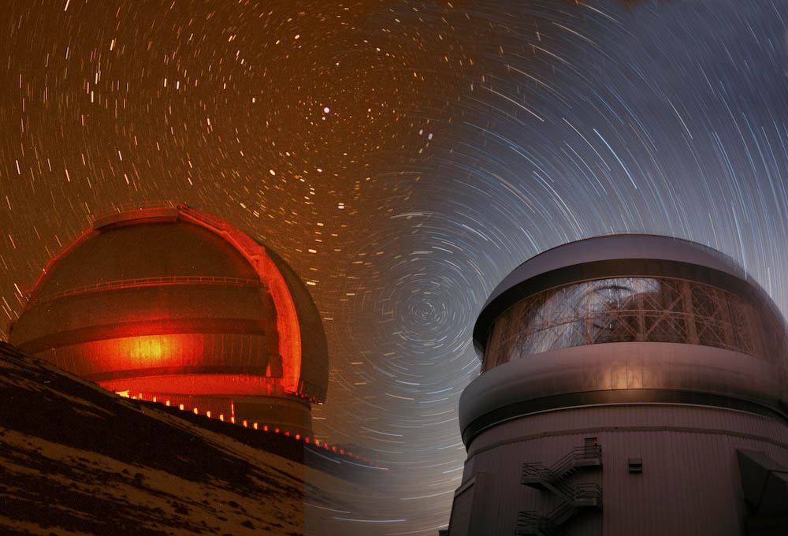
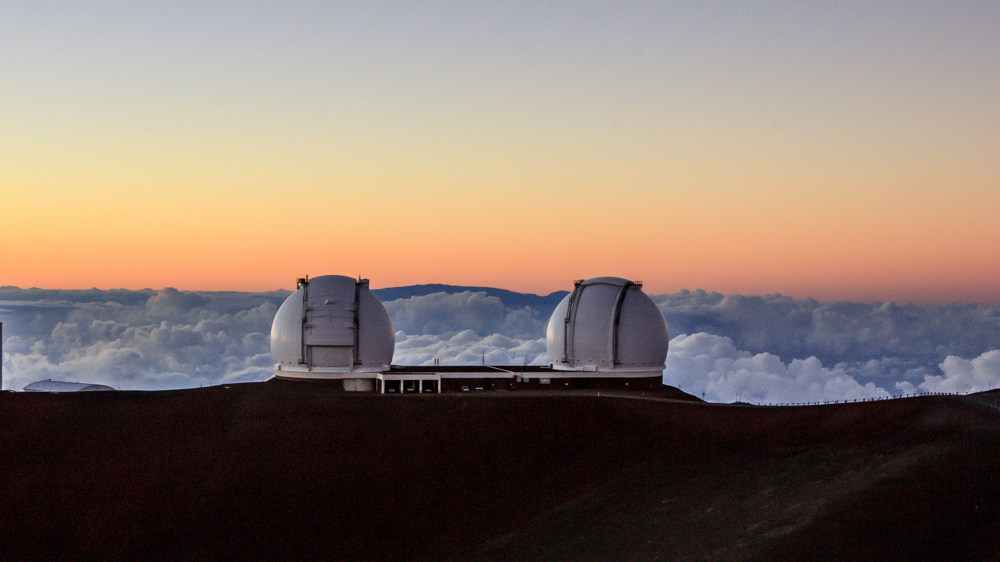
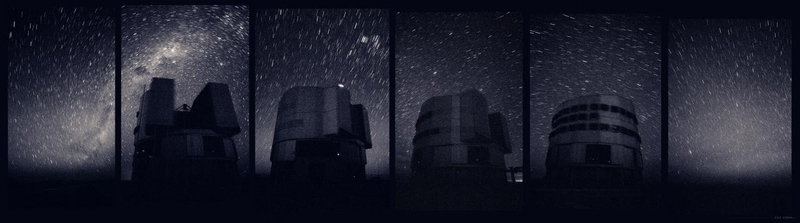
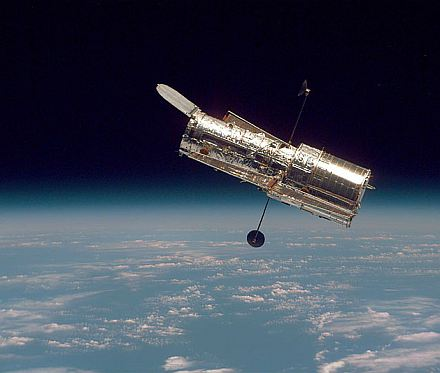

Gemini Observatory
From Wikipedia, the free encyclopedia.
The Gemini Observatory is an astronomical observatory consisting of two 8.1-metre (26.6 ft) telescopes, Gemini North and Gemini South, which are located at two separate sites in Hawaii and Chile, respectively. The twin Gemini telescopes provide almost complete coverage of both the northern and southern skies. They are currently among the largest and most advanced optical/infrared telescopes available to astronomers. (See List of largest optical reflecting telescopes). The National Science Foundation (NSF) of the United States, the National Research Council of Canada, CONICYT of Chile, MCTI of Brazil, and MCTIP of Argentina own and operate the Gemini Observatory. The NSF is currently (2017) the majority partner, contributing approximately 70% of the funding needed to operate and maintain both telescopes. The operations and maintenance of the observatory is managed by the Association of Universities for Research in Astronomy (AURA), through a cooperative agreement with NSF. NSF acts as the Executive Agency on behalf of the international partners.
The Gemini telescopes house a suite of modern instruments, offer superb performance in the optical and near-infrared, and employ sophisticated adaptive optics technology to compensate for the blurring effects of the Earth's atmosphere. Gemini is a world-leader in wide-field adaptive optics assisted infrared imaging, and has recently commissioned the Gemini Planet Imager, an instrument that allows researchers to directly image and analyze exoplanets that are a millionth as bright as the host star around which they orbit. Gemini continues to support research in almost all areas of modern astronomy, including the Solar System, exoplanets, star formation and evolution, the structure and dynamics of galaxies, supermassive black holes, distant quasars, and the structure of the Universe on the largest scales.
Past participants in the Gemini Observatory include Australia and the United Kingdom. The UK dropped out of the partnership at the end of 2012 and the Gemini Observatory has responded to the loss of funding by significantly reducing its operating costs, streamlining its operations, and implementing energy savings measures at each site. Both telescopes are also now operated remotely from Base Facility Operations centers in Hilo, Hawaii, and La Serena, Chile.
Overview
The Gemini Observatory's international Headquarters and Northern Operations Center is located in Hilo, Hawaii at the University of Hawaii at Hilo University Park. The Southern Operations Center is located on the Cerro Tololo Inter-American Observatory (CTIO) campus near La Serena, Chile. The "Gemini North" telescope, officially called the Frederick C. Gillett Gemini Telescope[1] is located on Hawaii's Mauna Kea, along with many other telescopes. That location provides excellent viewing conditions due to the superb atmospheric conditions (stable, dry, and rarely cloudy) above the 4,200-metre-high (13,800 ft) dormant volcano. It saw first light in 1999 and began scientific operations in 2000. The "Gemini South" telescope is located at over 2,700 metres (8,900 ft) elevation on a mountain in the Chilean Andes called Cerro Pachón. Very dry air and negligible cloud cover make this another prime telescope location (again shared by several other observatories, including the Southern Astrophysical Research Telescope (SOAR) and Cerro Tololo Inter-American Observatory). Gemini South saw first light in 2000.
Together, the two telescopes cover almost all of the sky except for two areas near the celestial poles: Gemini North cannot point north of declination +89 degrees, and Gemini South cannot point south of declination −89 degrees. Both Gemini telescopes employ a range of technologies to provide world-leading performance in optical and near-infrared astronomy, including laser guide stars, adaptive optics, multi conjugate adaptive optics, and multi-object spectroscopy. In addition, very high-quality infrared observations are possible due to the advanced protected silver coating applied to each telescope's mirrors, the small secondary mirrors in use (resulting in an f16 focal ratio), and the advanced ventilation systems installed at each site.
History of Gemini
It is estimated that the two telescopes cost approximately US$187 million to construct, and a night on each Gemini telescope is worth tens of thousands of U.S. dollars.[2] The two 8-meter mirror blanks, each weighing over 22 t (24 short tons), were fabricated from Corning's Ultra Low Expansion glass. Each blank was constructed by the fusing together of and subsequent sagging of a series of smaller hexagonal pieces. This work was performed at Corning's Canton Plant facility located in upstate New York. The blanks were then transported via ship to REOSC, located south of Paris for final grinding and polishing. One decision made during design to save money was eliminating the two Nasmyth platforms. This makes instruments like high resolution spectrographs and adaptive optics systems much more difficult to construct, due to the size and mass requirement inherent with Cassegrain instruments. A further challenge in designing large instruments is the requirement to have a specific mass and center-of-mass position to maintain the overall balance of the telescope.
Directorship
The first director of Gemini was Matt Mountain, who after holding the post for eleven years left in September 2005 to become director of Space Telescope Science Institute (STScI). He was succeeded by Jean-René Roy, who served for nine months,[5] after which time Doug Simons held the directorship from June 2006 to May 2011. He in turn was succeeded by an interim appointment of the then-retired Fred Chaffee, former director of W. M. Keck Observatory. Chaffee was succeeded in August 2012 by Markus Kissler-Patig,[6] who held the post until June 2017. Dr. Laura Ferrarese[7] succeeded Dr. Kissler-Patig in July 2017 with an interim appointment. The current director is Dr. Jennifer Lotz since September 6, 2018.
Location
W. M. Keck Observatory
From Wikipedia, the free encyclopedia.
The W. M. Keck Observatory is a two-telescope astronomical observatory at an elevation of 4,145 meters (13,600 ft) near the summit of Mauna Kea in the U.S. state of Hawaii. Both telescopes have 10 m (33 ft) aperture primary mirrors, and when completed in 1993 (Keck 1) and 1996 (Keck 2) were the largest astronomical telescopes in the world. They are currently the 3rd and 4th largest.
Overview
With a concept first proposed in 1977, telescope designers at the University of California, Berkeley (Terry Mast) and Lawrence Berkeley Laboratory (Jerry Nelson) had been developing the technology necessary to build a large, ground-based telescope.[1] With a design in hand, a search for the funding began. In 1985, Howard B. Keck of the W. M. Keck Foundation gave $70 million to fund the construction of the Keck I telescope, which began in September 1985, with first light occurring on 24 November 1990 using nine of the eventual 36 segments. With construction of the first telescope well advanced, further donations allowed the construction of a second telescope starting in 1991. The Keck I telescope began science observations in May 1993, while first light for Keck II occurred on October 23, 1996.
The key advance that allowed the construction of the Keck telescopes was the use of active optics to operate smaller mirror segments as a single, contiguous mirror. A mirror of similar size cast of a single piece of glass could not be made rigid enough to hold its shape precisely; it would sag microscopically under its own weight as it was turned to different positions, causing aberrations in the optical path. In the Keck telescopes, each primary mirror is made of 36 hexagonal segments that work together as a unit. Each segment is 1.8 meters wide, 7.5 centimeters thick, and weighs half a ton.[2] The mirrors were made from Zerodur glass-ceramic by the German company Schott AG.[3] On the telescope, each segment is kept stable by a system of active optics, which uses extremely rigid support structures in combination with three actuators under each segment. During observation, the computer-controlled system of sensors and actuators dynamically adjusts each segment's position relative to its neighbors, keeping a surface shape accuracy of four nanometers. As the telescope moves, this twice-per-second adjustment counters the effects of gravity and other environmental and structural effects that can affect mirror shape. Each Keck telescope sits on an altazimuth mount. Most current 8–10 m class telescopes use altazimuth designs due to their reduced structural requirements compared to older equatorial designs. Altazimuth mounting provides the greatest strength and stiffness with the least amount of steel, which, for Keck Observatory, totals about 270 tons per telescope, bringing each telescope's total weight to more than 300 tons. Two proposed designs for the next generation 30 and 40 m telescopes use the same basic technology pioneered at Keck Observatory: a hexagonal mirror array coupled with an altazimuth mounting.
Each of the two telescopes has a primary mirror of 10 meters (32.8 ft or 394 in), slightly smaller than the Gran Telescopio Canarias. However, all of the light collected by the Keck primary mirrors (75.76 m2) is sent to the secondary mirror and instruments, compared to GTC's primary mirror, which has an effective light-collection area of 73.4 m2, or 2.36 m2 (25.4 sq ft) less than each of the Keck primary mirrors. Because of this fundamental design difference, the Keck telescopes arguably remain the largest steerable, optical/infrared telescopes on Earth. The telescopes are equipped with a suite of cameras and spectrometers that allow observations across much of the visible and near-infrared spectrum.
Location
European Southern Observatory
The observatory’s 3.5-meter scope, the dryly named New Technology Telescope, was the first telescope in the world to have a computer-controlled main mirror. Even amateur scopes now have that technology. The ESO’s suite of telescopes in Chile’s Atacama Desert also includes the Very Large Telescope array (pictured), Europe’s flagship observatory. The ESO is also home to Europe’s portion of the Atacama Large Millimeter/sub-Millimeter Array, known as ALMA, an intercontinental collaboration with North America, east Asia and Chile. ALMA will be the highest observatory on Earth and the world’s most advanced radio astronomy observatory. Which takes us to the next top observatory …
Location
Hubble Space Telescope
In 18 eventful years, the Hubble Space Telescope has lived up to its namesake, one of the greatest astronomers in history. Considering its famous rocky birth, breathtaking postcards home, and world-renowned discoveries, it would be hard to argue that a single other scientific instrument has had more widespread impact than Hubble. Frank Summers, an astronomer and outreach scientist at the Space Telescope Science Institute in Baltimore, puts it this way: “I often say to audiences, how many of you can name a particle accelerator? Or a scanning electron microscope? Those are other instruments that have made discoveries on par with Hubble. But they haven’t made it into the public vernacular.” Maybe it was the mirror flaw, or its triumphant repair; maybe it was the images of the Pillars of Creation, or the Deep Field. Hubble has captured the public’s imagination like no other scientific instrument, and has provided unparalleled scientific revelations; it’s the source of more than 6,000 research papers. A sampling of Hubble discoveries in the past 18 years: determining the age of the universe; verifying that dark energy is speeding up the universe’s expansion; taking photographs of planets outside our solar system, and the chemicals in their atmospheres. Hubble Servicing Mission 4, part of the space shuttle’s STS-125 mission, is scheduled for next month. It will be the last time humans visit the orbital observatory; if STS-125 is successful, astronomers hope Hubble will last another 10 years. But they know the telescope’s legacy will live far longer. “We’ve done a lot of looking back over 400 years,” Summers said. “Hubble is a fitting successor to the Galileo telescope, because it helped us see things that we’ve never seen before … Hubble did play a huge role in transforming people’s visions of the universe.”
Location
Palomar Observatory

Palomar’s 200-inch Hale telescope helped revolutionize modern astronomy — and modern baking. Mirror makers spent nearly $1 million — in 1934 dollars — and still couldn’t make a big enough quartz mirror. George Ellery Hale, who shepherded Palomar’s creation as he had Mt. Wilson’s, approached Corning Glass Works of upstate New York and asked for a 200-inch mirror made of a new glass blend called Pyrex. Changes in temperature make Pyrex expand and contract less than regular glass, so a Pyrex mirror is less prone to distortion problems, which had plagued Hale’s 100-inch scope on Mt. Wilson. After World War II-related delays, first light came Jan. 26, 1949. Edwin Hubble was the first to peer through the looking glass. A year later, a companion 48-inch scope began the first Palomar Observatory Sky Survey, which mapped the entire northern sky. The catalog would later become the basis for the Guide-Star Catalog used by the Hubble Space Telescope. After three quarters of a century, Palomar is still making new discoveries. In 2007, scientists announced a new “adaptive optics” system to sharpen pictures taken from Palomar. The resolution exceeds the Hubble Space Telescope’s by a factor of two.